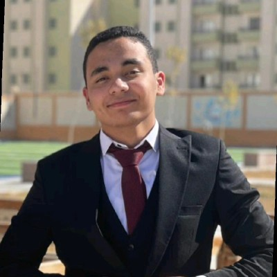

Geophysics & Subsurface Exploration
Third-year Geophysics student at Assiut University with a strong interest in geophysical exploration and subsurface data interpretation. Active member of the SEG student chapter with leadership experience in media and finance. A STEM school graduate with strong English communication skills, seeking to leverage a rigorous technical background in the Energy Industry and Field Operations.
Bachelor's Degree in Geophysics
Location: Assiut, Egypt
Expected Graduation: 2027
High School Diploma
Focus: Project-based scientific education
Graduated: 2023
Proficient in industry-standard geophysical software and subsurface modeling tools: